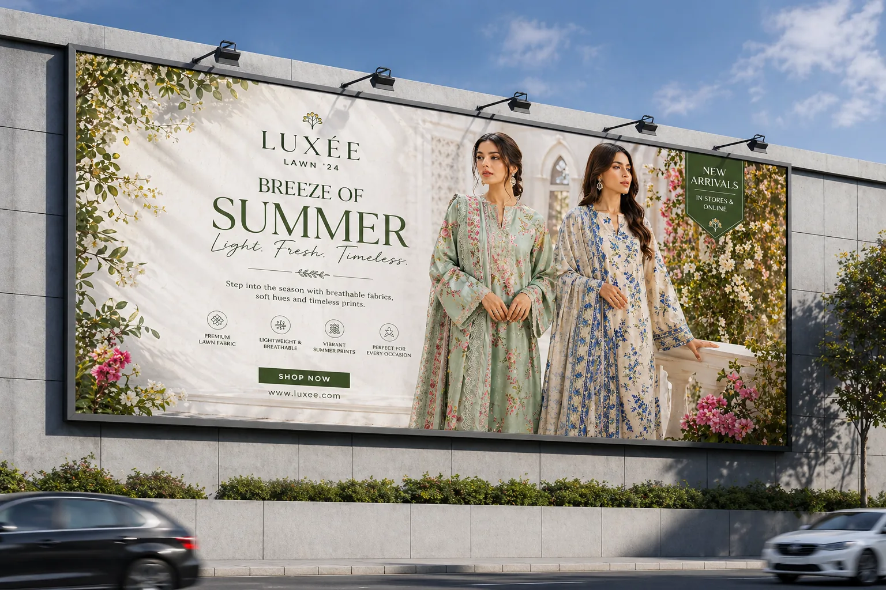
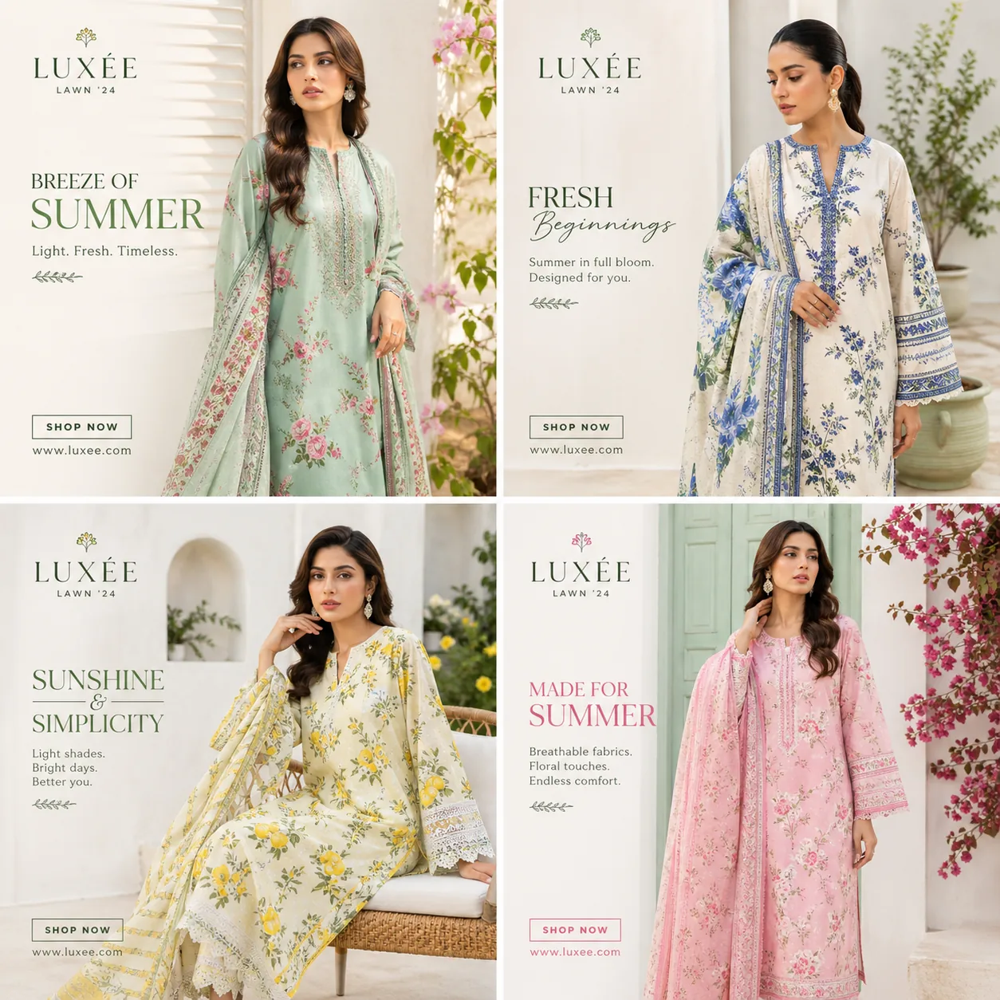

Campaign direction
Luxury Fashion
Premium fashion campaign direction built around editorial imagery, restrained typography and polished visual pacing.

01 / Overview
Editorial first. Promotional second.
The luxury fashion work uses image-led composition and restrained typography to create a premium campaign mood. The visual direction gives the product imagery room to lead while the promotional message remains readable.
Premium editorial
Large imagery, elegant spacing and clean message hierarchy.
Campaign formats
The visual language is shown across campaign and billboard-style presentation.
3 key visuals
Three campaign presentations are included in the portfolio.
02 / Campaign visuals
Luxury fashion direction


03 / Outcome & value
Art direction and restraint.
The campaign shows a more restrained creative direction: image selection, spacing and typography are used to create a premium visual tone without overcrowding the message.